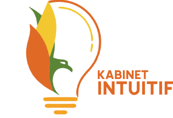

Logo Kabinet
Arti Dari Setiap Warna Kabinet
Siluet Lampu Kuning dan Orange memiliki makna dekat dengan warna bumi, yang berarti membumi berusaha untuk meraih seluruh elemen di FKI
Daun Hijau berarti islami yang membawa kesejukan di lingkungan FKI
Daun Kuning berarti mandiri yang pada setiap individu mempunyai kesadaran kolektif demi kebaikan bersama
Daun Orange berarti berkontribusi dengan membuka diri menerima segala aspirasi sebagai bentuk kontribusi
Arti Dari Bentuk Lambang Kabinet
Siluet Lampu Kuning dan Orange memiliki makna dekat dengan warna bumi, yang berarti membumi berusaha untuk meraih seluruh elemen di FKI
Daun Hijau berarti islami yang membawa kesejukan di lingkungan FKI
Daun Kuning berarti mandiri yang pada setiap individu mempunyai kesadaran kolektif demi kebaikan bersama
Daun Orange berarti berkontribusi dengan membuka diri menerima segala aspirasi sebagai bentuk kontribusi